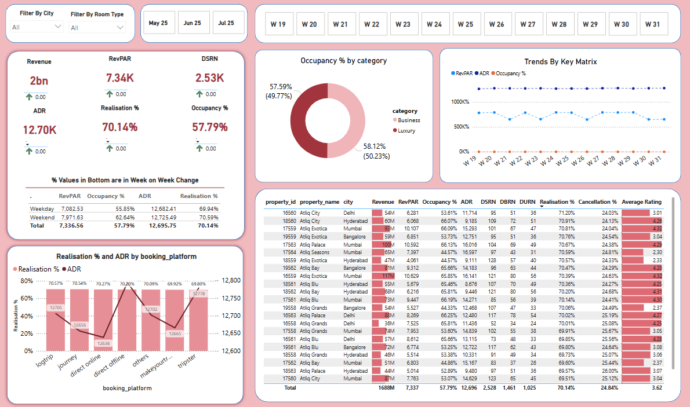
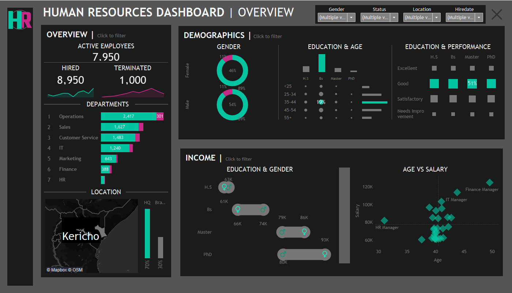

.png)
Brief Professional Summary
Result-driven tech enthusiast with a strong foundation in data analytics, database management, and technical help desk support. Passionate about solving real-world problems through technology and data-driven decision making.
My Resume
Skills
Academic background
Work Experience
Certifications
Achievements
My Projects
1. Campus Crib – Final Fourth Year Project
October 2024 – April 2025
Designed and developed a web-based platform with advanced search filters and real-time chat to help campus students find off-campus hostels.
Tech Stack: HTML, CSS, JavaScript, PHP, MySQL, XAMPP
GitHub Repository
2. Exploratory Data Analysis with MySQL
Cleaned and analyzed a dataset of African products with over 1,000 sales records using MySQL Workbench.
GitHub Repository
3. Web Scraping and Data Handling in Python
Used requests and BeautifulSoup to extract and clean data, stored in a Pandas DataFrame and exported to CSV.
Google Colab
4. Netflix Data Wrangling
Processed the Netflix dataset on Kaggle with cleaning, anomaly detection, and visualizations.
Kaggle Notebook
5. Titanic Exploratory Data Analysis
Performed univariate, bivariate, and multivariate analysis on the Titanic dataset.
Kaggle Notebook
6. Business Intelligence on Power BI

Created a dashboard for hotel management using Power BI, Power Query, and DAX.
Project Files
7. Visualization with Tableau

Built a Tableau dashboard for HR data analysis.
Dashboard |
Dataset |
Report

10. Linear Regression Model with Python
Built a regression model to predict home prices using a single feature.
Google Colab
11. Multiple Classification Models
Compared Logistic Regression, Decision Tree, Random Forest, KNN, Naive Bayes, and SVM on the Wine dataset.
Google Colab
12. Machine Learning Operations (MLPOs)
Built a regression pipeline using KNN and GridSearchCV on the California Housing dataset.
Google Colab
– More Upcoming Projects...